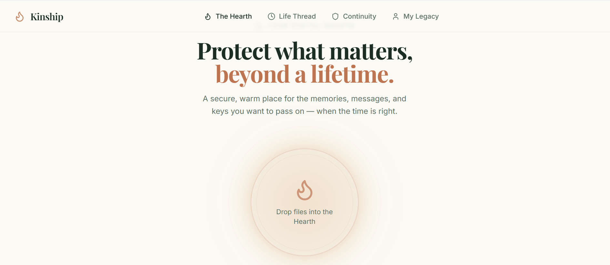
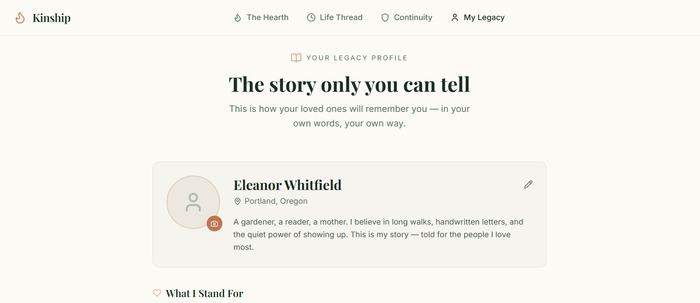
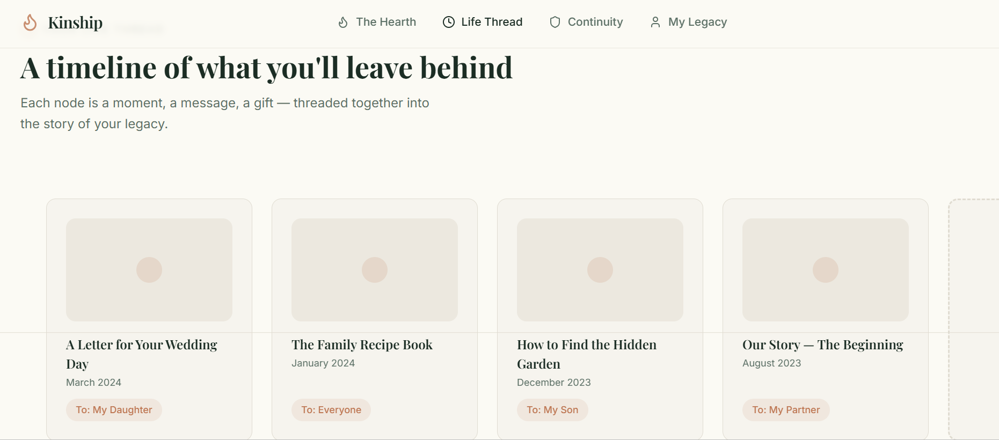

Kinship Website



End-to-end design and development of a new website for Kinship, a digital end of life planning platform.
End of life planning is a complex and emotional process. Kinship needed a new website that would help users plan for the end of their life in a way that is easy to understand and use while still being compassionate and empathetic.
Created a design system and website for Kinship that is easy to understand and use while still being compassionate and empathetic.
A compassionate and empathetic website that helps users plan for the end of their life in a way that is easy to understand and use.


